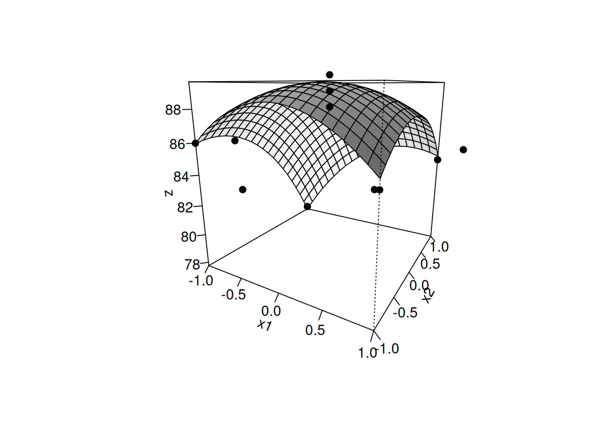

\[
x = \begin{bmatrix}
b_1\\
b_2
\end{bmatrix} ,
\]
\[
b = \begin{bmatrix}
x_1\\
x_2
\end{bmatrix}
\]
Now solve for the values of x (or \(\Delta\)’s) linearly:
\[
A * x = b
\tag{2}\]
Using matrix algebra, the Equation 2 is solved for the values of x:
\[
x = A^{-1} * b
\tag{3}\]
Thus, the matrix solution, widely used in multivariate situations, such as response surface methodology and factorial experiment, can be obtained by the following Equation 4:
\[
y = b_0+b_1*x, \, linear\ fit
\\
y = b_0+b_1*x_1+b_2*x_2+...+b_n*x_n, \, multilinear\ fit
\\
y = b_0+b_1*x_1+b_2*x_2+...+b_n*x_n, \, linear\ response\ surface\ methodology
\\
y = b_0+b_1*x_1+b_2*x_2+b_{12}*x_1*x_2, \, factorial\ design\, 2^2
\\
y = b_0+b_1*x_1+b_2*x_2+b_3*x_3+b_{12}*x_1*x_2+,b_{13}*x_1*x_3+b_{23}*x_2*x_3+b_{123}*x_1*x_2*x3 \, experiment \, factorial \, 2^3
\\
y = b_0+b_1*x_1+b_2*x_2+b_{11}*x_1^2+b_{22}*x_2^2+b_{12}*x_1*x_2, \, quadratic \, response \, surface \, methodology
\\
\tag{5}\]
As a rule, all applications listed in Equation 5 can be solved with the help of matrix relations of the equations Equation 4 (linear, multilinear and linear response surface adjustments) or Equation 2 (factorial designs). Two situations of this nature are exemplified below.
Reaction Yield & Factorial Design 2\(^{2}\)
The simplest factorial experiment is the one that evaluates the response of an experiment (yield, for example) in which two factors (temperature and type of catalyst, for example) are varied at two levels each (low and high). The table prepared in the excerpt below from the data provided by Neto et al (Neto, Scarminio, and Bruns 2010) exemplifies this situation.
To conduct matrix analysis of the data, it is necessary to convert the table of independent variables (predictors) into a coded design matrix, in which high values (upper level) are represented by +1 and low values (lower level) by -1. In addition, it is also necessary to assign +1 to the 1st. column, and produce a 4th column containing the product of the encoded predictors. For example, for temperature at 40 (-1) and catalyst B (+1), the row will contain the product -1. This final 4x4 matrix is called the contrast coefficient matrix:
In addition, it is necessary to divide the result of the matrix operation by a specific scalar vector. In short: the coded matrix X of the predictors is created, the matrix Y of the response is applied to Equation 2, and the result is divided by a characteristic vector of the factorial design 2\(^{2}\) (c(4,2,2,2)). The code snippet below solves the problem raised:
# Creation of the coded planning matrixX <-matrix(c(1, -1, -1, 1, 1, 1, -1, -1, 1, -1, 1, -1, 1, 1, 1),nrow =4, byrow =TRUE)# Creation of the yield matrixY <-as.matrix(rendim)# Determination of the beta coefficients:beta <-t(X) %*% Y /c(4, 2, 2, 2)beta
[,1]
[1,] 67.75
[2,] 22.50
[3,] -13.50
[4,] -8.50
Thus, the result is interpreted as:
\[
\begin{pmatrix}
M \\
T \\
C \\
TC \\
\end{pmatrix} =
\begin{pmatrix}
67.75 \\
22.50 \\
-13.50 \\
-8.50 \\
\end{pmatrix}
\tag{6}\]
Where M represents the overall mean of the response, T and C the main effects (temperature and catalyst), and TC the interaction effect. In summary, the results suggest that 1) the temperature favored the yield, especially for catalyst A, 2) there is a reduction in yield when replacing catalyst A with B, and c) the highest yields are obtained with catalyst A at the highest temperature. Expressing these results in the multiple linear function:
\[
y=67.75+22.5*T-13.5*C-8.5*T*C
\tag{7}\]
Interestingly, we arrive at the same results if, instead of applying Equation 2, we use Equation 4, followed by multiplication (and not division) by another vector (c(1,2,2,2):
This multivariate statistical technique is also commonly used in modeling responses influenced by more than one factor, sometimes associated with factorial design, and with a view to optimizing a response without the need to evaluate all possible combinations. This can be particularly useful when one wants to optimize a test whose response depends, for example, on scalar predictors, such as the concentration range of a given reagent and the pH conditions.
For example, for a linear response surface(Neto, Scarminio, and Bruns 2010), in a test in which one wishes to verify the best yield (rend, %) of a reaction by varying 3 levels of reagent concentration (conc, %) and three magnetic stirring speeds (agit, rpm), one can, as before, prepare the contrast matrix from the information in the following table:
# Data for response surface methodologyconc <-c(45, 55, 45, 55, 50, 50, 50)agit <-c(90, 90, 110, 110, 100, 100, 100)x1 <-c(-1, 1, -1, 1, 0, 0, 0)x2 <-c(-1, -1, 1, 1, 0, 0, 0)yield <-c(69, 59, 78, 67, 68, 66, 69)tab.msr <-data.frame(conc, agit, x1, x2, yield)knitr::kable(tab.msr, caption ="Experiment data of linear response surface methodology(Neto et al, 2010).", "pipe") # table
Experiment data of linear response surface methodology (Neto et al, 2010).
conc
agit
x1
x2
yield
45
90
-1
-1
69
55
90
1
-1
59
45
110
-1
1
78
55
110
1
1
67
50
100
0
0
68
50
100
0
0
66
50
100
0
0
69
# Criação da matriz de coeficientes de contrasteX <-matrix(c(1, 1, 1, 1, 1, 1, 1, -1, 1, -1, 1, 0, 0, 0, -1, -1, 1, 1, 0, 0, 0), nrow =7, byrow =FALSE)# Criação da matriz de rendimentoY <-as.matrix(rendim)# Determinação dos coeficientes beta:beta <-solve(t(X) %*% X) %*%t(X) %*% Ybeta
[,1]
[1,] 68.00
[2,] -5.25
[3,] 4.25
Thus, the linear function that expresses the response surface will be:
\[
y=68.00-5.25*conc+4.25*agit
\tag{8}\]
Quadratic Response Surface
Sometimes the linear model may not fit the experimental design, which can be verified by an Analysis of Variance (ANAVA) of the experiment. In these cases, a quadratic surface methodology can be applied, which can be expressed as seen in Equation 5. In these cases, a construction called star planning is common, which adds an identical one rotated by 45\(^{o}\) to the initial planning, and whose new points are \(\sqrt{2}\) coded units away from the central point. The example below aims to illustrate this methodology.
Dados de experimento de metodologia de superfície quadrática de resposta (Neto e cols, 2010).
conc
agit
x1
x2
rendim
30
115
-1.000000
-1.000000
86
40
115
1.000000
-1.000000
85
30
135
-1.000000
1.000000
78
40
135
1.000000
1.000000
84
35
125
0.000000
0.000000
90
35
125
0.000000
0.000000
88
35
125
0.000000
0.000000
89
28
125
-1.414214
0.000000
81
35
139
0.000000
1.414214
80
42
125
1.414214
0.000000
86
35
119
0.000000
-1.414214
87
# tabela
This time the contrast coefficient matrix expands to six columns as a function of the terms x\(_{1}^{2}\), x\(_{2}^{2}\), and x\(_{1}\)x\(_{2}\), becoming:
From the result above it is possible to predict the optimized conditions for the test. In this sense, R allows, for example, the construction of a three-dimensional graph that represents the function obtained, and without the need for an additional package: as follows:
## Quadratic response surface (MSR)x <-seq(-1, 1, 0.1) # predictor xy <-seq(-1, 1, 0.1) # predictor ymrs <-function(x, y) {89.00+1.51* x -2.36* y -2.81* x^2-2.81* y^2+1.75* x * y} # function applied to predictorsz <-outer(x, y, mrs) # 3D plot output (response)res <-persp(x, y, z, xlab ="x1", ylab ="x2", zlab ="z",shade =0.4, theta =30, phi =15, ticktype ="detailed")# surface plot of function z(x,y)points <-trans3d(x1, x2, rendim, pmat = res) # command for adding experimental pointspoints(points, pch =19, col =1) # adding points

Quadratic surface described by the MSR equation with superposition of experimental values.
However, there are some packages for R for three-dimensional representation of data and functions (rgl, plot3D, scatterplot3d), as well as for factorial design analysis (agricolae, afex, FMC), and response surface methodology (rsm).
Neto, Benı́cio Barros, Ieda Spacino Scarminio, and Roy Edward Bruns. 2010. Como Fazer Experimentos-: Pesquisa e Desenvolvimento Na Ciência e Na Indústria. Bookman Editora.